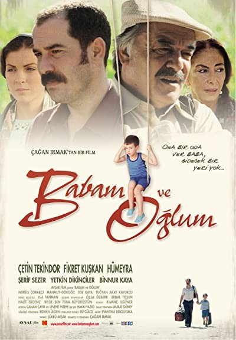
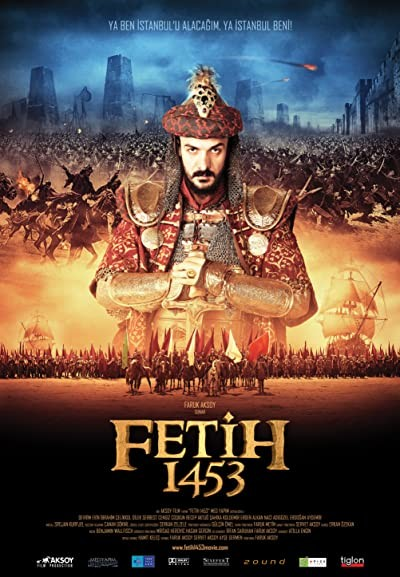
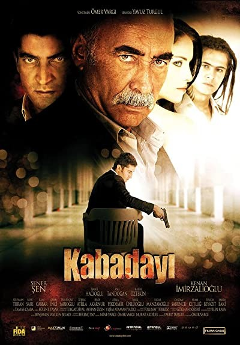

| Babam ve Oğlum | Film Süresi | Ülke | Vizyon tarihi | Yönetmen |
|---|---|---|---|---|
|  | 1 saat 48 dakika | Türkiye | 18 Kasım 2005 | Çağan Irmak |
| Fetih 1453 | Film Süresi | Ülke | Vizyon tarihi | Yönetmen |
|  | 2 saat 45 dakika | Türkiye | 24 Ekim 2025 | Faruk Aksoy |
| Kabadayı | Film Süresi | Ülke | Vizyon tarihi | Yönetmen |
|  | 2 saat 20 dakika | Türkiye | 14 Aralık 2007 | Ömer Vargı |